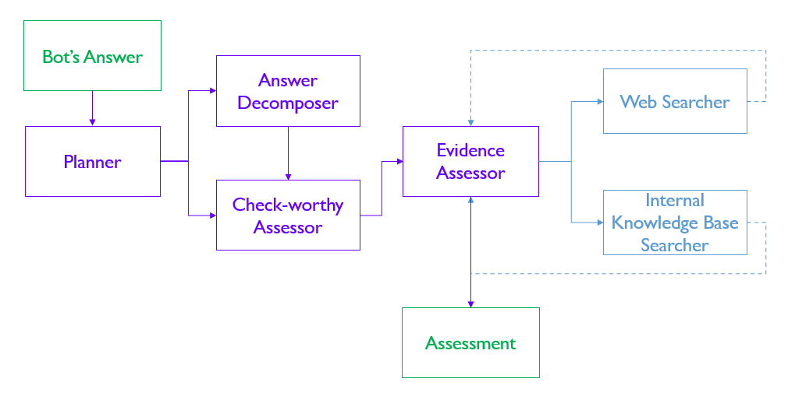

For AI Developers
Page Summary
This page guides system-level application of the ARC Framework to individual agentic AI systems. Development teams follow a four-step methodology: identify capabilities, evaluate risks, implement controls, and assess residual risks. Teams typically complete this process within 3-7 days for simple systems or 1-2 weeks for complex systems.
This guide is for development teams applying the ARC framework to specific agentic AI systems. Your goal is to systematically identify capabilities, evaluate relevant risks, implement appropriate controls, and assess residual risks for your system.
Four-Step Process
The ARC Framework application follows four sequential steps:
- Step 1: Identify Capabilities → Analyse your system's autonomous functions and map to capability taxonomy
- Step 2: Evaluate Risks → Review component, design, and capability risks; apply relevance criteria
- Step 3: Implement Controls → Contextualise recommended controls to your implementation
- Step 4: Assess Residual Risks → Document remaining risks and mitigation strategies
Iterative Application
Revisit these steps as your system evolves or new capabilities are added. The framework is designed for continuous risk management, not one-time assessment.
Step 1: Identify Capabilities
Analyse your agentic AI system's capabilities using the capability taxonomy or your organisation's contextualised version.
Key principle: Capabilities are defined system-level—if any agent has a capability, the entire system has that capability.
Quick Capability Identification
Map each function your system performs to specific capabilities:
- Sends emails to customers → Official Communication
- Executes Python/JavaScript code → Code Execution
- Searches Google/web → Internet & Search Access
- Reads/writes database records → File & Data Management
- Processes refunds or payments → Business Transactions
- Modifies system config or cloud resources → System Management
If unsure whether a function qualifies as a capability, err on the side of inclusion—better to assess an extra risk than miss a critical one.
Common Capability Identification Mistakes
- Multi-agent systems: Only considering main agent's capabilities instead of system-level view
- Read-only tools: Ignoring that reading data can still expose PII or enable reconnaissance
- Tool vs capability confusion: Listing tools available rather than what the system autonomously DOES
Always analyse system-level capabilities holistically and assess all tools comprehensively.
Step 2: Evaluate Risks
For each identified capability, map specific risks using the ARC Framework's risk register or your organisation's contextualised version. Always include baseline risks from components (LLM, tools, instructions, memory) and design (architecture, access controls, monitoring).
Review process:
- Component and design risks - Apply to all agentic systems regardless of capabilities
- Capability-specific risks - For each capability identified in Step 1
- Contextualise to your use case - Define domain-specific terms and focus on critical scenarios
- Apply relevance criteria - Score Impact and Likelihood separately (1-5 scale); retain risks where both scores meet your organisation's threshold (e.g., both ≥3)
Prioritising Risks Effectively
High-stakes domains warrant extra scrutiny — for example, healthcare systems must treat hallucinated medical facts as a serious hazard, finance systems should prioritise preventing unauthorised transactions, and legal workflows must guard against unqualified legal advice. Across domains, common high-impact risks include unauthorised or incorrect transaction execution, PII exposure or leakage, malicious code injection where code execution is possible, and prompt injection via untrusted web content when internet access is enabled.
Component and Design Risks Often Overlooked
Many teams focus only on capability risks and miss critical baseline issues:
Component Risks:
- LLM insufficient capability for complex reasoning tasks
- Tool weak authentication (API tokens too permissive)
- Ambiguous instructions (agents fill gaps unpredictably)
- Memory contamination (hallucinations saved to knowledge base)
Design Risks:
- Linear pipeline error propagation
- Lack of audit trails for debugging
- Excessive privileges granted to agent roles
- No monitoring for anomalous behaviour
Step 3: Implement Controls
For each relevant risk from Step 2, review recommended technical controls provided in the framework. Contextualise controls to your specific implementation—not all controls are equally critical, and teams must exercise judgement in adapting controls to meaningfully address risks.
Understanding Control Levels
The ARC framework recommends controls at different levels of priority, and teams should apply differentiated treatment based on risk severity and organisational context:
| Control Level | Context | Expectation | Examples | Review Process |
|---|---|---|---|---|
| Level 0: Essential Controls | High-impact risks, regulatory requirements | Implement unless technically infeasible; document exceptions with compensating controls | Authentication for transaction APIs, audit logging for sensitive operations, input validation for code execution | Requires senior stakeholder or security team sign-off if not implemented |
| Level 1: Recommended Controls | Moderate-impact risks, best practices | Implement where practical; exercise engineering judgement on feasibility | Rate limiting for API calls, output guardrails for content quality, human review for edge cases | Team-level decision with documented rationale |
| Level 2: Enhanced Controls | Defence-in-depth, low residual risk tolerance | Consider based on risk appetite and available resources | Advanced monitoring dashboards, red team testing, redundant safety layers | Optional; prioritise based on organisational maturity |
Not all controls are mandatory—the framework provides a menu of options. Your governance team may specify which controls are required for your organisation; otherwise, apply controls proportionate to risk severity.
Contextualising Controls
Although the controls in the organisation's risk register would have been contextualised by the governance teams, they may need additional adaptation to your specific use case or implementation. Below are examples showing the full progression from framework baseline to organisation context to system-specific adaptation:
Example 1: Output Safety Guardrails
Framework Baseline: "Implement output safety guardrails to detect and prevent generation of undesirable content"
Organisation Control (from Governance Team): "Use Azure Content Safety API with toxicity threshold >0.7, sexual content threshold >0.6; block flagged outputs and log violations to Application Insights"
System-Specific Adaptation (by Development Team): "For customer-facing chatbot: Use Azure Content Safety API with toxicity >0.5 (stricter than org baseline due to external users), sexual >0.6, violence >0.6; block and return templated 'I cannot help with that' response; log to Application Insights with customer_id tag for support escalation"
Example 2: Human Approval Workflows
Framework Baseline: "Require human approval before executing high-impact actions"
Organisation Control (from Governance Team): "Require manager approval via Slack workflow for transactions >$1,000; auto-approve lower amounts with email notification"
System-Specific Adaptation (by Development Team): "For automated refund agent: Require approval via Slack for refunds >$500 (lower than org threshold due to fraud risk in refunds); include customer history and refund reason in approval request; auto-approve ≤$500 only for customers with >6 months history and <3 refunds in past year; otherwise escalate to supervisor"
Example 3: Hallucination Reduction
Framework Baseline: "Implement methods to reduce hallucination rates in agent outputs"
Organisation Control (from Governance Team): "Use RAG with organisation-verified knowledge bases; disable LLM parametric knowledge for policy/compliance questions; add UI disclaimers on critical information"
System-Specific Adaptation (by Development Team): "For HR policy assistant: Use RAG with HR policy database (updated weekly by HR team); restrict LLM to only answer from retrieved documents (block answers with <0.8 retrieval confidence); add disclaimer on all policy responses: 'Please verify critical details with your HR representative'; include source citations with document name and last-updated date"
This progression from generic to organisation-specific to system-specific makes controls increasingly actionable and measurable.
Step 4: Assess Residual Risks
Assess residual risks after controls are implemented. Consider where harm can still occur and what control limitations exist. If residual risks remain unacceptable, implement additional controls to reduce likelihood or impact.
For each implemented control, ask: What failure scenarios does this control not prevent? Think through attack vectors the control doesn't cover (e.g., "guardrails detect known patterns but miss novel encoding attacks"), conditions where it fails (e.g., "human approval fails if malicious requests appear legitimate"), and underlying assumptions (e.g., "RAG assumes knowledge base accuracy—fails if sources contain errors"). Re-assess each failure scenario's impact and likelihood to determine if the residual risk is acceptable.
For residual risks you accept, document the specific failure scenario, your chosen strategy (accept, monitor, or mitigate), and concrete actions with measurable thresholds. Examples: "Accept hallucinations in casual conversation—users understand chatbot limitations"; "Monitor injection attempts via logs, alert if >10/day, maintain <0.1% exploitation rate"; "Mitigate advanced injection through weekly review of flagged conversations + quarterly red team testing".
When Residual Risks Are Too High
Review with senior stakeholders if you identify catastrophic residual risk (Impact 5, even if low likelihood), regulatory exposure where residual risk violates compliance requirements, or no mitigation strategy where risk is documented but there's no plan to manage it.
When risks remain unacceptable, consider adding stronger controls (not just more controls), reducing the system's capability scope, adding human-in-the-loop requirements, limiting the deployment context (e.g., pilot vs. full production), or deferring deployment until better controls become available.
Application Examples
Below are practical examples showing how the framework applies to different system types.
Example 1: Agentic Fact Checker
Fact-checking is a time-consuming process requiring deep analysis of claims, evidence, and their sufficiency. Our colleagues in the AI Practice recently developed an agentic fact-checking system (read their Agentic AI Primer for details), using a complex multi-agent architecture to validate the veracity of any claim.
Step 1: Identify Capabilities
 Figure 1: Architecture for the Agentic Fact Checker (taken from the Agentic AI Primer)
The Agentic Fact Checker system comprises six distinct agents:
| Agent Type | Agent Name | Task |
|---|---|---|
| Core Orchestration | Planner | Coordinates overall fact-checking workflow and task distribution |
| Core Orchestration | Answer Decomposer | Breaks down complex statements into verifiable claims |
| Verification Agents | Check-worthy Assessor | Evaluates which claims require fact-checking |
| Verification Agents | Evidence Assessor | Synthesises information from multiple sources to make factuality determinations |
| Information Retrieval Agents | Web Searcher | Accesses external web sources via search APIs |
| Information Retrieval Agents | Internal KB Searcher | Queries internal knowledge base for relevant information |
Based on the capability taxonomy, this system demonstrates:
| Category | Capability | Explanation |
|---|---|---|
| Cognitive | CAP-01: Planning and Goal Management | The Planner coordinates the workflow and determines whether systematic decomposition is needed. |
| Cognitive | CAP-02: Agent Delegation | The Planner assigns subtasks to specialized agents (decomposer, assessors, searchers) and coordinates their activities. |
| Cognitive | CAP-03: Tool Use | The Evidence Assessor evaluates and selects between web search and internal knowledge base tools. |
| Interaction | CAP-04: Multimodal Understanding and Generation | All agents process text statements; Evidence Assessor generates factuality assessments in natural language. |
| Interaction | CAP-07: Internet and Search Access | The Web Searcher retrieves up-to-date information from external web sources via search APIs. |
| Operational | CAP-11: File and Data Management | The Internal KB Searcher queries and accesses internal knowledge bases. |
Step 2: Evaluate Risks
We identify risks from baseline components and capabilities, assessing likelihood and impact given the fact-checking context. Assuming organisational relevance threshold requires both impact ≥3 AND likelihood ≥3, we identify the following priority risks:
Priority Risks (Impact ≥3, Likelihood ≥3):
| Risk ID | Element | Risk Statement | Assessment |
|---|---|---|---|
| RISK-002 | CMP-01 (LLM) | Insufficient alignment of LLM behaviour | [Impact: 4, Likelihood: 4] LLM misalignment could cause it to ignore safety constraints or misinterpret fact-checking instructions, undermining verification accuracy. |
| RISK-007 | CMP-03 (Tools) | Lack of input sanitisation | [Impact: 5, Likelihood: 4] Critical given web search tools. Unsanitized web content from malicious sites could inject prompts to manipulate verification results. |
| RISK-028 | CAP-04 (Multimodal Understanding) | Generation of non-factual or hallucinated content | [Impact: 5, Likelihood: 4] Hallucinated "facts" directly undermine the system's core purpose of verifying truthfulness. |
| RISK-034 | CAP-07 (Internet Access) | Prompt injection via malicious websites | [Impact: 5, Likelihood: 4] Critical vulnerability given reliance on web sources. Adversarial sites could embed instructions to override verification logic. |
| RISK-035 | CAP-07 (Internet Access) | Unreliable information or websites | [Impact: 5, Likelihood: 4] Core risk—retrieving and trusting unreliable sources undermines verification accuracy and could propagate misinformation. |
| RISK-044 | CAP-11 (File & Data Management) | Prompt injection via malicious files or data | [Impact: 4, Likelihood: 3] If internal knowledge base contains user-contributed content, malicious data could inject prompts affecting all verification tasks. |
(Lower-priority risks documented but not shown here for brevity)
Step 3: Implement Controls
For priority risks (Impact ≥3, Likelihood ≥3), we implement the following Level 0 and Level 1 controls:
| Risk ID | Selected Controls | Implementation |
|---|---|---|
| RISK-002 | CTRL-0005 (Level 0): Conduct structured evaluation of multiple LLMs CTRL-0006 (Level 1): Require human approval before executing high-impact actions |
• Evaluated Claude Sonnet 4.5, GPT-4, and Gemini Pro on fact-checking benchmarks • Selected Claude Sonnet 4.5 for superior instruction-following and refusal capabilities • Require human review before publishing final verification verdicts |
| RISK-007 | CTRL-0015 (Level 1): Treat all tool metadata and outputs as untrusted input | • Validate all web search results against strict JSON schemas • Sanitize tool outputs before incorporating into agent prompts • Filter tool descriptions for embedded instructions |
| RISK-028 | CTRL-0048 (Level 2): Implement methods to reduce hallucination rates CTRL-0049 (Level 0): Implement UI/UX cues for hallucination risk CTRL-0050 (Level 1): Enable users to verify answers against sources |
• Implement RAG using verified knowledge bases to ground responses • Display disclaimers highlighting potential for inaccuracies • Provide inline citations linking to source passages for verification |
| RISK-034 | CTRL-0061 (Level 1): Implement escape filtering before incorporating web content CTRL-0062 (Level 0): Use structured retrieval APIs rather than web scraping CTRL-0063 (Level 0): Implement input guardrails to detect prompt injection |
• Sanitize all retrieved web content before adding to prompts • Use Google Search API for structured results rather than raw HTML scraping • Deploy prompt injection detector to scan web content |
| RISK-035 | CTRL-0064 (Level 1): Prioritise search results from verified, high-quality domains | • Configure search API to prioritise .gov, .edu, and established news sources • Require cross-source validation for claims from unknown domains |
| RISK-044 | CTRL-0063 (Level 0): Implement input guardrails to detect prompt injection CTRL-0084 (Level 0): Disallow unknown or external files unless scanned |
• Validate all new data contributions to knowledge base before ingestion • Scan uploaded files for embedded prompt injection attempts • Maintain allowlist of approved data sources |
Step 4: Assess Residual Risks
After implementing controls, key residual risks remain:
| Risk ID | Residual Risk Description | Mitigation Strategy |
|---|---|---|
| RISK-034 | Sophisticated Prompt Injection: Advanced adversarial websites may craft novel injection attacks that bypass current guardrails and filters. | • Monitor all API calls and agent outputs for anomalous patterns • Regularly update prompt injection detectors with new attack patterns • Establish incident response procedures for detected bypasses |
| RISK-028 | Cascading Hallucination: False information generated early in the verification workflow may propagate through subsequent agents, creating systematic verification bias. | • Implement multi-agent cross-checking where independent agents verify claims • Add user feedback mechanisms to flag incorrect verdicts • Compare internal agent reasoning chains to detect inconsistencies |
| RISK-035 | Domain-Specific Source Assessment: System may struggle distinguishing authoritative from unreliable sources in highly specialized or emerging domains with limited established references. | • Begin deployment with small-scale pilots in well-defined domains • Validate verification outputs with subject matter experts • Maintain domain-specific allowlists of trusted sources |
These residual risks and mitigation strategies will be reviewed quarterly and updated based on observed system behaviour and emerging threats.
Example 2: Agentic Coding Assistant
Agentic coding assistants like Cursor and Claude Code help developers write, debug, and refactor code by autonomously reading codebases, executing commands, and modifying files. These systems typically employ multi-agent architectures with specialized agents for different coding tasks, requiring careful risk management given their access to sensitive codebases and ability to execute arbitrary code.
Step 1: Identify Capabilities
The agentic coding assistant comprises five specialized agents:
| Agent Type | Agent Name | Task |
|---|---|---|
| Core Orchestration | Task Planner | Decomposes user coding requests into subtasks and coordinates agent workflow |
| Code Understanding | Codebase Analyzer | Searches codebase, reads relevant files, and understands existing code structure |
| Code Generation | Code Writer | Generates new code or modifies existing code based on requirements |
| Execution & Testing | Command Executor | Runs terminal commands, executes tests, and validates code functionality |
| File Operations | File Manager | Reads, writes, and manages files and directories in the workspace |
Based on the capability taxonomy, this system demonstrates:
| Category | Capability | Explanation |
|---|---|---|
| Cognitive | CAP-01: Reasoning and Problem-Solving | The Codebase Analyzer debugs issues by analyzing stack traces, code flow, and dependencies; Code Writer applies software engineering patterns. |
| Cognitive | CAP-02: Planning and Goal Management | The Task Planner breaks down complex coding requests into sequential steps (e.g., "add authentication" → analyze existing auth, design schema, implement endpoints, write tests). |
| Cognitive | CAP-03: Tool Use and Delegation | The Task Planner selects appropriate agents and tools based on task requirements (search vs. read vs. execute). |
| Interaction | CAP-04: Multimodal Understanding and Generation | All agents process code, markdown documentation, and configuration files; Code Writer generates syntactically correct code in multiple languages. |
| Operational | CAP-09: Code Execution | The Command Executor runs shell commands, executes tests, installs dependencies, and validates code changes. |
| Operational | CAP-11: File and Data Management | The File Manager reads source files, writes modifications, creates new files, and manages version control operations. |
Step 2: Evaluate Risks
We identify risks from baseline components and capabilities, assessing likelihood and impact given the coding assistant context. Assuming organisational relevance threshold requires both impact ≥3 AND likelihood ≥3, we identify the following priority risks:
Priority Risks (Impact ≥3, Likelihood ≥3):
| Risk ID | Element | Risk Statement | Assessment |
|---|---|---|---|
| RISK-002 | CMP-01 (LLM) | Insufficient alignment of LLM behaviour | [Impact: 4, Likelihood: 3] Misaligned LLM may ignore security constraints or execute dangerous operations when instructed to "fix it quickly" without proper validation. |
| RISK-007 | CMP-03 (Tools) | Lack of input sanitisation | [Impact: 5, Likelihood: 4] Critical given file system and command execution tools. Malicious file contents or unsanitized tool outputs could inject prompts to manipulate assistant behaviour or execute unintended operations. |
| RISK-028 | CAP-04 (Multimodal Understanding) | Generation of non-factual or hallucinated content | [Impact: 4, Likelihood: 4] Hallucinating incorrect code patterns, API usage, or architectural decisions leads developers to implement buggy or insecure features. |
| RISK-038 | CAP-09 (Other Programmatic Interfaces) | Incorrect use of unfamiliar programmatic interfaces | [Impact: 3, Likelihood: 4] Assistant may misinterpret bespoke API semantics when interacting with internal tools or non-standard interfaces. |
| RISK-039 | CAP-10 (Code Execution) | Production or execution of poor or ineffective code | [Impact: 5, Likelihood: 3] Generated code may be incorrect, inefficient, or contain bugs that cause operational disruptions when deployed or run. |
| RISK-040 | CAP-10 (Code Execution) | Production or execution of vulnerable or malicious code | [Impact: 5, Likelihood: 4] Critical risk—generated code may contain SQL injection, XSS, insecure deserialization, or other OWASP Top 10 vulnerabilities that reach production. |
| RISK-041 | CAP-11 (File & Data Management) | Destructive modifications to files or databases | [Impact: 5, Likelihood: 3] Assistant may accidentally delete critical files, overwrite production configs, or drop database tables when misinterpreting user intent. |
| RISK-042 | CAP-11 (File & Data Management) | Exposing PII from accessed files | [Impact: 4, Likelihood: 3] Code suggestions may inadvertently reproduce API keys, credentials, or sensitive data found in configuration files or comments. |
| RISK-043 | CAP-11 (File & Data Management) | Prompt injection via malicious files | [Impact: 4, Likelihood: 3] Malicious code repositories may contain hidden instructions in comments, README files, or docstrings designed to manipulate assistant behaviour. |
(Lower-priority risks documented but not shown here for brevity)
Step 3: Implement Controls
For priority risks (Impact ≥3, Likelihood ≥3), we implement the following Level 0 and Level 1 controls:
| Risk ID | Selected Controls | Implementation |
|---|---|---|
| RISK-002 | CTRL-0005 (Level 0): Conduct structured evaluation of multiple LLMs CTRL-0007 (Level 0): Log all LLM inputs and outputs |
• Evaluated Claude Sonnet 4.5, GPT-4o, and Gemini Pro on code generation benchmarks (HumanEval, MBPP) • Selected Claude Sonnet 4.5 for superior instruction-following and code safety • Log all prompts and generated code to CloudWatch with 90-day retention |
| RISK-007 | CTRL-0015 (Level 1): Treat all tool metadata and outputs as untrusted input | • Validate all tool outputs (file contents, command results, search results) against expected schemas • Sanitize tool outputs before incorporating into agent prompts or displaying to users • Escape special characters in file paths and command arguments to prevent injection • Filter tool descriptions and error messages for embedded instructions |
| RISK-028 | CTRL-0048 (Level 2): Implement methods to reduce hallucination rates CTRL-0050 (Level 1): Enable users to verify answers against sources |
• Implement RAG using codebase context to ground code suggestions in actual project patterns • Display inline citations showing which files informed code suggestions • Add "Verify this code before using" disclaimer on all generated code blocks |
| RISK-038 | CTRL-0068 (Level 0): Use code linters to screen generated code | • Integrate ESLint for JavaScript/TypeScript with strict ruleset • Integrate Pylint for Python with security-focused configuration • Display linter warnings to user before applying code changes • Block code application if critical errors detected |
| RISK-039 | CTRL-0069 (Level 0): Run code only in isolated environments CTRL-0070 (Level 0): Review all agent-generated code before execution CTRL-0073 (Level 0): Create denylist of dangerous commands |
• Execute all code in Docker containers with no network access by default • Require explicit user approval before running any shell commands • Denylist: rm -rf, dd, mkfs, iptables, sudo commands without user confirmation |
| RISK-040 | CTRL-0071 (Level 0): Use static code analyzers to detect vulnerabilities CTRL-0070 (Level 0): Review all agent-generated code before execution |
• Integrate Semgrep with OWASP ruleset for vulnerability scanning • Integrate Bandit for Python security analysis • Flag HIGH/CRITICAL vulnerabilities and require user acknowledgment • Provide security-focused system prompts emphasizing input validation |
| RISK-041 | CTRL-0075 (Level 1): Do not grant write access unless necessary CTRL-0076 (Level 1): Require human approval for destructive changes CTRL-0077 (Level 0): Enable versioning or soft-delete |
• Restrict write access to workspace directory only (no system files) • Require explicit confirmation before deleting files or modifying package.json/requirements.txt • Integrate with Git to ensure all changes are tracked and reversible |
| RISK-042 | CTRL-0047 (Level 0): Implement output guardrails to detect and redact PII CTRL-0081 (Level 1): Implement input guardrails to detect PII in accessed data |
• Scan all generated code for API keys, tokens, passwords using regex patterns • Flag and redact detected secrets before displaying to user • Warn user when reading config files containing credentials |
| RISK-043 | CTRL-0062 (Level 0): Implement input guardrails to detect prompt injection CTRL-0083 (Level 0): Disallow unknown external files unless scanned |
• Scan all file contents for prompt injection patterns before processing • Warn user when opening repositories from untrusted sources • Sanitize code comments and docstrings before including in prompts |
Step 4: Assess Residual Risks
After implementing controls, key residual risks remain:
| Risk ID | Residual Risk Description | Mitigation Strategy |
|---|---|---|
| RISK-040 | Subtle Security Vulnerabilities: Static analyzers may miss logic flaws, race conditions, or business logic vulnerabilities that require deeper semantic understanding. | • Require security-focused code review for authentication, authorization, and payment logic • Integrate periodic penetration testing of generated features • Maintain security checklist for high-risk code categories |
| RISK-039 | Sophisticated Prompt Injection: Advanced attacks embedded in dependency documentation or third-party code may bypass current detection and manipulate assistant behaviour. | • Monitor command execution patterns for anomalies (e.g., unexpected network calls) • Regularly update injection detection patterns based on emerging attacks • Implement rate limiting on destructive operations |
| RISK-041 | Misinterpreted User Intent: User requests like "clean up the code" may be interpreted too broadly, leading to unintended file deletions or modifications despite approval workflows. | • Require assistant to explicitly list files to be modified before execution • Implement dry-run mode showing proposed changes before applying • Maintain undo history for last 10 operations |
| RISK-028 | Framework/Library Hallucination: Assistant may hallucinate non-existent APIs, deprecated methods, or incorrect framework usage in less common libraries. | • Prioritize official documentation retrieval for library-specific questions • Display confidence scores for code suggestions involving external dependencies • Encourage developers to verify against official docs for critical integrations |
These residual risks and mitigation strategies will be reviewed monthly during the first six months of deployment, then quarterly thereafter based on observed incident rates and developer feedback.
Example 3: Agentic Call Assistant
Agentic call assistants handle customer phone inquiries, answer questions about products and services, and perform simple transactional operations like appointment scheduling and booking modifications. These systems operate in real-time conversational contexts requiring natural language understanding, access to customer databases, and integration with booking systems. This example demonstrates framework application with higher risk appetite (threshold: Impact ≥4 AND Likelihood ≥3), appropriate for organisations prioritising rapid deployment and customer experience over defence-in-depth.
Step 1: Identify Capabilities
The agentic call assistant comprises four specialised agents:
| Agent Type | Agent Name | Task |
|---|---|---|
| Core Orchestration | Conversation Manager | Routes customer requests to appropriate specialised agents and maintains conversation context |
| Information Retrieval | Knowledge Agent | Retrieves product information, policies, and FAQs from knowledge bases to answer customer queries |
| Transaction Management | Booking Agent | Accesses appointment systems to check availability, create new bookings, and modify existing appointments |
| Customer Data | Profile Agent | Retrieves customer information including contact details, booking history, and preferences |
Based on the capability taxonomy, this system demonstrates:
| Category | Capability | Explanation |
|---|---|---|
| Cognitive | CAP-01: Reasoning and Problem-Solving | The Conversation Manager interprets customer intent from natural language queries and resolves ambiguous requests. |
| Cognitive | CAP-02: Planning and Goal Management | The Conversation Manager plans multi-step interactions (e.g., "reschedule appointment" → check existing booking, find availability, confirm new time, update system). |
| Cognitive | CAP-03: Tool Use and Delegation | The Conversation Manager selects appropriate agents based on query type (information vs. transaction vs. customer data lookup). |
| Interaction | CAP-04: Multimodal Understanding and Generation | All agents process natural language queries and generate conversational responses; system handles phone audio transcription. |
| Operational | CAP-09: Other Programmatic Interfaces | The Booking Agent integrates with appointment scheduling APIs; Profile Agent queries CRM systems. |
| Operational | CAP-11: File and Data Management | The Knowledge Agent retrieves from product documentation and policy databases; Profile Agent accesses customer records. |
Step 2: Evaluate Risks
We identify risks from baseline components and capabilities, assessing likelihood and impact given the call assistant context. Assuming organisational relevance threshold requires both impact ≥4 AND likelihood ≥3 (higher risk appetite), we identify the following priority risks:
Priority Risks (Impact ≥4, Likelihood ≥3):
| Risk ID | Element | Risk Statement | Assessment |
|---|---|---|---|
| RISK-028 | CAP-04 (Multimodal Understanding) | Generation of non-factual or hallucinated content | [Impact: 4, Likelihood: 4] Hallucinating incorrect product information, pricing, or policies could mislead customers into incorrect decisions or create contractual disputes. |
| RISK-032 | CAP-09 (Other Programmatic Interfaces) | Executing unauthorised business transactions | [Impact: 5, Likelihood: 3] Agent may create, modify, or cancel appointments without proper customer authorisation if it misinterprets conversational intent. |
| RISK-042 | CAP-11 (File & Data Management) | Exposing PII from accessed files | [Impact: 4, Likelihood: 3] Agent may inadvertently disclose another customer's personal information (contact details, booking history) if customer identification fails or database queries retrieve wrong records. |
Risks Below Threshold (Impact <4 or Likelihood <3):
| Risk ID | Element | Risk Statement | Assessment | Why Not Priority |
|---|---|---|---|---|
| RISK-002 | CMP-01 (LLM) | Insufficient alignment of LLM behaviour | [Impact: 4, Likelihood: 2] Modern LLMs with strong safety training are unlikely to catastrophically misalign in customer service contexts. | Likelihood too low |
| RISK-007 | CMP-03 (Tools) | Lack of input sanitisation | [Impact: 3, Likelihood: 3] Tool injection could manipulate responses but unlikely to cause severe customer harm in this context. | Impact too low |
| RISK-030 | CAP-04 (Multimodal Understanding) | Making inaccurate commitments in communications | [Impact: 4, Likelihood: 2] Agent may overcommit but conversational nature provides clarification opportunities before commitments finalise. | Likelihood too low |
| RISK-041 | CAP-11 (File & Data Management) | Destructive modifications to files or databases | [Impact: 3, Likelihood: 2] Booking modifications are reversible; permanent data loss unlikely with modern systems. | Both too low |
(Additional risks documented but not shown here for brevity)
Step 3: Implement Controls
For priority risks (Impact ≥4, Likelihood ≥3), we implement primarily Level 0 controls with selective Level 1 controls:
| Risk ID | Selected Controls | Implementation |
|---|---|---|
| RISK-028 | CTRL-0048 (Level 2): Implement methods to reduce hallucination rates CTRL-0049 (Level 0): Implement UI/UX cues for hallucination risk |
• Implement RAG using verified product catalogue and policy database (updated daily) • Add audio disclaimer at call start: "Information provided is for reference only; verify critical details with documentation" • Include citations in call transcripts showing which knowledge base articles informed responses |
| RISK-032 | CTRL-0056 (Level 1): Require explicit user confirmation before initiating transactions CTRL-0058 (Level 1): Restrict agents to proposing transactions using separate controller |
• Require verbal confirmation before any booking changes: "I'll change your appointment to [date/time]. Please confirm by saying 'yes' or 'confirm'" • Record confirmation audio for audit trail • Use dedicated transaction controller API that validates all booking operations independently • Booking Agent cannot directly modify databases; only submits requests to controller |
| RISK-042 | CTRL-0047 (Level 0): Implement output guardrails to detect and redact PII CTRL-0082 (Level 2): Do not grant access to PII unless required |
• Implement output guardrails that redact phone numbers, email addresses, and full addresses before agent responds • Restrict Profile Agent access to current caller's records only (enforce via customer ID verification) • Log all customer data access attempts with caller ID matching validation • Block queries requesting data for different customer IDs |
Step 4: Assess Residual Risks
After implementing controls, key residual risks remain:
| Risk ID | Residual Risk Description | Mitigation Strategy |
|---|---|---|
| RISK-028 | Product Information Drift: Knowledge base may contain outdated information if not regularly updated, leading to incorrect customer guidance despite RAG grounding. | • Establish weekly knowledge base update process with product team sign-off • Monitor customer complaints about inaccurate information • Maintain version tracking for knowledge base updates • Accept: Some lag between product changes and knowledge base updates is acceptable |
| RISK-032 | Ambiguous Verbal Confirmation: Customer may say "yes" to general conversation rather than specific booking confirmation, leading to unintended changes. | • Require agent to state exact action before confirmation request • Monitor for unusual booking modification patterns (e.g., high cancellation rates) • Accept: Clear verbal confirmation protocol is sufficient given low-stakes nature of appointment changes |
| RISK-042 | Customer Identification Errors: Phone number-based identification may fail if caller uses different number, potentially exposing previous customer's data. | • Implement secondary verification (date of birth, booking reference) for sensitive requests • Log all identification failures and review monthly • Accept: Rare misidentification events acceptable given low sensitivity of booking data |
| RISK-007 | Tool Output Manipulation: Booking system responses could theoretically contain injected instructions if compromised. | • Monitor booking API responses for anomalies • Accept: Internal booking system is trusted; risk of compromise considered low • No additional controls warranted given risk appetite |
These residual risks and mitigation strategies will be reviewed quarterly, with accelerated review if customer complaint rates exceed 2% of total calls or booking error rates exceed 0.5%.